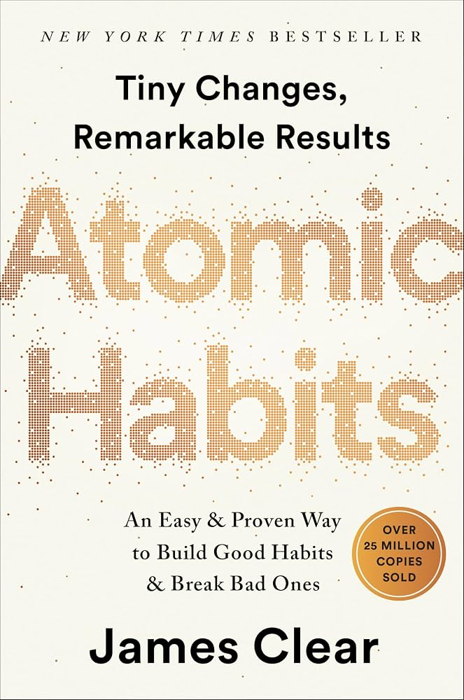

Atomic Habits opens with James Clear's own story: a serious baseball injury in high school that nearly ended his athletic career, and the slow, boring, unglamorous rebuild — small physical and academic habits, repeated daily — that eventually made him a starting player and, later, a Dean's List student. That personal arc frames the book's central argument: transformative results rarely come from one big change. They come from the accumulated weight of tiny, consistent habits — what Clear calls being "1% better every day," a rate of improvement so small it's invisible in the moment but compounds into a completely different trajectory over months and years.
The book's engine is the habit loop — cue, craving, response, reward — borrowed and extended from behavioral psychology, and its practical translation into the Four Laws of Behavior Change: make it obvious, make it attractive, make it easy, and make it satisfying. Every chapter builds toward concrete tactics for each law (and its inverse, for breaking bad habits), from habit stacking and implementation intentions to environment design, temptation bundling, and the Two-Minute Rule.
Underneath the tactics sits a deeper claim: habits aren't just things you do, they're evidence of who you believe yourself to be. Clear argues the most durable way to change behavior is to change identity first — to become "the type of person who doesn't miss workouts" rather than someone chasing a single outcome — because outcome-based goals fade once achieved, but identity-based habits persist. The result is less a motivational pep talk than an operating manual: precise, research-backed, and built entirely around systems you can actually run every day.
Every habit — good or bad — runs on the same four-stage cycle. The Four Laws are simply this loop turned into a set of levers.
Scale any habit down until it can be started in two minutes or less — master showing up before worrying about performing well.
Use the Habits Scorecard to build awareness, write implementation intentions ("I will [X] at [TIME] in [LOCATION]"), stack new habits onto existing ones, and redesign your environment so good cues are visible everywhere.
Use temptation bundling to pair a wanted action with a needed one, join a culture where your desired behavior is already normal, and reframe a habit's underlying association to make it something you crave rather than endure.
Apply the Law of Least Effort by priming your environment, reduce the number of steps between you and a good habit, use the Two-Minute Rule to master showing up, and lock in good behavior with one-time commitment devices.
Attach an immediate, small reward to every good habit so it feels satisfying right away, track progress visually to reinforce the streak, and use a habit contract with an accountability partner to make skipping it feel costly.
You do not rise to the level of your goals. You fall to the level of your systems.
Every action you take is a vote for the type of person you wish to become.
Habits are the compound interest of self-improvement.
You should be far more concerned with your current trajectory than with your current results.
If the book has one idea worth carrying forward above all others, it's that habits are never really about the outcome you're chasing — they're votes for the identity you're building, cast one small, unglamorous repetition at a time. The Four Laws matter because they make each vote easier to cast: obvious enough to remember, attractive enough to want, easy enough to actually do, and satisfying enough to repeat.
This is what separates Atomic Habits from advice built on willpower or motivation: it treats behavior change as a design problem, not a character test. Environment, friction, and immediate feedback do the work that discipline is usually asked to do — and unlike discipline, they don't run out by the end of a long day.
The closing warning about complacency is the book's quiet correction to itself: automaticity is the goal, but automaticity without periodic reflection can just as easily lock in stagnation as progress. The full system, then, isn't "build habits and stop thinking" — it's build habits, then keep checking whether they're still the right ones.
Atomic Habits earns its place as the modern reference text on behavior change by doing something rarer than it sounds: turning genuinely useful psychology into tools a reader can apply the same day. The Habit Loop gives the underlying mechanism; the Four Laws (and their inversions) give the actionable interface on top of it — few books manage that translation this cleanly, and fewer still make it this readable.
Its comparative weakness is scope rather than execution: it's built for optimizing individual habits, one at a time, and offers less guidance on juggling many habits at once, habits entangled with other people, or habits complicated by genuine addiction. Readers wanting the research foundations underneath the stories will want to go looking for them elsewhere.
The practical recommendation: don't try to install the whole system at once. Pick one habit, run it through all Four Laws — cue, craving, response, reward — and let the Two-Minute Rule get you started. The book's real promise was never instant transformation; it's that small, obvious, easy, satisfying habits, repeated long enough, quietly become undeniable evidence of who you've become.